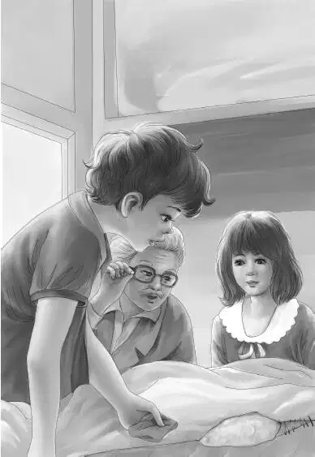

It was quiet in the caboose while Jessie laid out Violet’s scissors and threaded a needle. Grandfather sat by his window as he always did， but the others sat around the table with Jessie.
Benny asked， “Are you going to mend my mattress way up in the lookout？”
Jessie laughed. “No， I couldn’t work up there. I think we shall have to take it down.”
“I’ll do it，” said Henry. “Come on， Ben， give me a hand.”
The boys pulled at the mattress. It was heavy and hard to hold. But at last the long mattress slid down from the lookout. The boys laid it on the table.
Jessie sat down right in front of the hole. She looked at the mattress. It was covered with old black leather.
“I wonder if this is the same mattress the circus people used，” she said. “It looks old enough.”
“Remember I told you，” said Grandfather， “that my friend said we could have new covers if we wanted them.”
“I remember，” said Jessie. “But we’re glad we took the caboose just as it was. No new things.” She took a stick and poked at the stuffing. She said， “A lot of stuffing is coming out. I think I’ll pull out a little more. That will make it more even.”
She did so. Out came a big bunch of stuffing. She picked it to pieces because it was rather hard. Then she pushed it back with the long stick. Then she began to sew. Everybody watched.
“That’s like a baseball，” said Benny.
“Yes， it’s called baseball stitch，” said Jessie. “The needle goes in one side and then in the other.”
When it was done， Benny said， “That’s fine， Jessie. Would you want to mend the other side， too？”
“Of course！I might as well do it all.”
Jessie went around and sat down on the other side of the mattress. She said， “This side isn’t as bad.”
“I’ll help you pull out the stuffing，” said Benny. “I’m used to it. Every night I sneeze and sneeze.”
He pulled out a lot of stuffing with the stick.
“Let’s take it all out， Jessie，” he said. “Then it really will be smooth. It’s so lumpy.” He dug out some more.
Henry laughed. He said， “You have lots of troubles， Ben. Lumps and sneezes. Why didn’t you say so？”
“I did say so. I asked Jessie a long time ago to mend my mattress， didn’t I？What’s all this？”
“Well， what is it？” asked Henry.
Benny began saying “Hey！Hey！Hey！” He pulled at the stuffing， and out dropped a little package done up in paper！
“Oh， Benny！” said Jessie.
Benny’s hands shook as he tried to untie the string.

“Oh， shucks！” he said. “I can’t untie that string. I’ll tear it open.”
He tore the paper and shook it. A long chain fell out that sparkled with every color of the rainbow. Benny picked up the chain and hung it on one finger. The light made it shine with blue and yellow and green and flashing red. Everyone said， “O-ooo！”
“Benny！” called Mr. Alden in a loud voice from his chair. “Let me see that！”
Benny gave the shining string to his grandfather.
“Children！” said Grandfather. “This is that diamond necklace！Real diamonds， I’m sure.”
“That big one in the middle is just the color of my red dish，” said Benny.
“I’m sure that is a ruby. If it is a real ruby， it is worth more than the diamonds.” Grandfather gazed at it.
Henry said， “This is wonderful！Think what it means！This certainly belongs to Cho-Cho. He can sell it for hundreds of dollars.”
“And get back his talking horse，” said Benny.
The Aldens passed the necklace from hand to hand. They all watched it sparkle in the light. Violet said， “I can see a beautiful violet color as I turn it.”
“And I can see red，” said Benny， twisting it.
“I’ll tell you what we can do，” said Grandfather. “Al says the next stop is a big city. It will surely have a good jewelry store. We can take the necklace there and ask them how much it is worth. They will know if the diamonds are real.”
Jessie added， “Then we’ll have something to tell Cho-Cho.”
Violet said slowly， “I was thinking of the Thin Man. He didn’t hide it here， did he， Grandfather？”
“No， certainly not. I’m sure this was Chi-Chi’s own hiding place. Probably nobody slept in this lookout for years. I’m sure the owner’s wife would not take the upper bunk. She’d sleep in the lower one.”
“Just let me see that necklace again，” said Jessie. “Isn’t it beautiful！” They passed the necklace around again.
Henry gave the necklace back to Benny. He said， “How in the world did Chi-Chi expect her husband to find it？”
“Maybe she didn’t want Cho-Cho to find it，” said Jessie. “But I can’t think why.”
Benny was staring at nothing. “Listen！” he shouted. “She did want Cho-Cho to find it！Think of that postcard we found behind the books. It said ‘Be on the lookout’—and the necklace was up in the lookout！”
“Benny， I do believe you are right，” exclaimed Mr. Alden. “Cho-Cho read that verse， but he didn’t understand what his wife meant.”
Henry said， “We didn’t understand， either， at first.” He smiled at Benny.
Jessie settled back. She said， “Now I can hardly wait to get to that big city to see how much the necklace is worth. I was sorry before， because the city means the end of the trip.”
Benny shook his head. He said， “No， Jessie， our trip is just half over. We still have the trip back home. And don’t forget we still have a mystery. Why did the Thin Man run away？And how can we get word to him that we have found the necklace？”
Henry nodded at his brother. “Good for you， Ben. That is a real question. If the police couldn’t find the Thin Man， how can we？”
At last， Jessie picked up her needle. “I’ll have to sew up this mattress or Benny won’t have any bed to sleep in.” She stuffed it carefully and sewed up the corner.
“We’ll put it back， Jessie，” said Henry. Benny took hold of one end. As he climbed up， Benny began to laugh. He called down，
If you are a Clown，
Be on the lookout
For things in a crown.
“I’d like to see Cho-Cho’s face when he sees the necklace，” said Jessie.
“And Mr. Shaw’s face， and the Thin Man’s face，” said Benny.
“If we find him，” said Violet.
After the sheets were on the bed again， the family sat down. Henry laughed. He said， “Well， Jessie， I hope this isn’t your idea of a quiet， peaceful change！”
“Well， no，” said Jessie. “But it certainly was a change！”